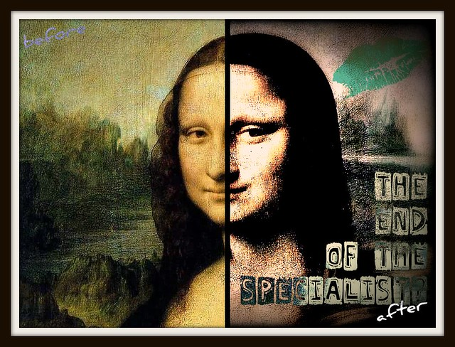

| Home | Previous Posts |
|---|
22nd September 2019
We’re doing occupations. Welcome to the eighth blog post in this series. The main aim of this blog is to talk about Occupational Therapy and Occupational Science.
It has become clearer to me over the past several years that my speciality is actually occupation. I have never introduced myself as a Mental Health Occupational Therapist, despite this being the main area that I have worked in for the past 11 years. I am so glad that Occupational Therapy education in Australia hasn’t followed other health professions (e.g. Medicine, Psychology) with regards to specialisations.

I too often hear about OT students and new graduates wanting to specialise in a specific treatment area or even in a particular therapy (e.g. CBT, Sensory Modulation etc). My response has recently become, “Don’t forget you’re already a specialist in occupation!”. Having this mindset has helped me to easily transition between jobs in mental health and physical health, because my focus is always on occupational performance, rather than on what treatment/therapy I can provide.
I recently participated in a presentation to doctors about the importance of multidisciplinary (Occupational Therapy, Social Work, Nursing, Psychology and Psychiatry) formulation to guide mental health treatment. I used “Occupational formulation: A three-part structure” (Brooks & Parkinson, 2018) to develop my formulation of the case study. It became evident almost immediately that my OT formation was so different and this did not go unnoticed by the other disciplines. Utilising this three-part structure (occupational influences, occupational presentation and occupation focus) helped me to identify all past and present occupations and to identify potential goals for meaningful and purposeful occupations (Brooks & Parkinson, 2018). Apart from Social Work (which considered social systems), the other disciplines focused on diagnosis and treatment/therapy.
So for those who do not know: Occupational Therapy is not just about helping someone to return to work. Every activity that humans do is an occupation. Occupations can fall into categories such as: self care, activities of daily living, play, leisure, work, education, rest and sleep. Occupational Therapist’s are specialists in occupation!
Brooks, R., Parkinson, S. (2018) Occupational formulation: A three-part structure. Bristish Journal of Occupational Therapy, 81 (3), 177-179.
Keep on doing occupations!
Neil Woodroffe, Occupational Therapist
Doing Occupations (2019)